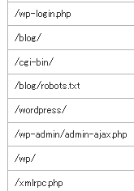

WordPressブログ不正アクセスの痕跡
先日、数年ぶりぐらいにアクセスログを閲覧してみたのですが、複数のドメインというか、ほぼすべてのドメインで以下のような不明なアクセスが記録されておりました。

文字列から考えるに、おそらくはWordPressブログへの不正ログインを試みているものと思われますが、数百にのぼるドメインのほぼすべてで、このような不正アタックの痕跡が残されていたのです。
ぼくはWordPressでブログを作成したことは一度しかないので、どのような危険性があるのかは不明ですが、海外からの無数のIPアドレスからのアクセスがあったため、おそらくは組織がらみのハッキングではないかとぼくは考えております。
このようなアクセスについては、実際にWordPressを利用している場合はサーバーサイドのログで200 OKになると思いますが、使用していない場合は404エラーログが多発することになるのですぐわかります。自サイトのなかでは、アクセス数の多いサイトほど無数の不正アクセスの痕跡がありましたが、アクセス数の少ないサイトについては、数か月に１回とかその程度の頻度のようでした。
僕はほとんどのサイトでDreamweaverを使用していますし、CMSを使うとしてもMTOSを利用しますので、被害にあうことはなかったのですが、WordPressを利用している方は注意が必要です。
ブログが改ざんされることにより、リンクを書き換えられたリ、あるいはhtaccessを書き換えられたリして、ウイルスをばらまくサイトへ誘導される可能性があります。そこでウイルスに感染すれば、最終的にはパソコンが乗っ取られてしまう可能性もあることでしょう。
目的が何なのかは不明ですが、とにかくWordPressを利用している方は何等かの対策をすべきではないかと思われます。
なぜ、WordPressばかりが狙われるのかというと、一番人気の高いブログツールであることがもちろん最大の理由ではあるかと思いますが、動的なサイトであるという点もひとつの要因なのではないかと考えております。
といいますのも、MTOSやDWで作成した静的なサイト全体を改ざんするのは困難だろうと思われるからです。当ブログのようなちいさなサイトでも、サイト全体を再構築するには結構な時間がかかります。再構築というのは、つまり、サーバー内のhtmlファイルを書き換えることに他ならないわけですが、正常にログインできている状態でも、ただでさえ時間がかかってめんどいのです。
その点、WordPressのような動的サイトの場合、再構築の必要がなく、一行書き換えればそれで済むわけですので、それほどの手間はかからないかと思います。
なので、静的サイトで構築している場合はあまり心配はないかとも思いますが、この機会にCMSのログインパスワードとFTPパスワードを変更することにしました。また、サイト全体の外部リンクのチェックもしておきました。
ほかにも、サーバーでSSH通信を利用できるのであれば、そちらの方も設定しておくと安心かもしれません。